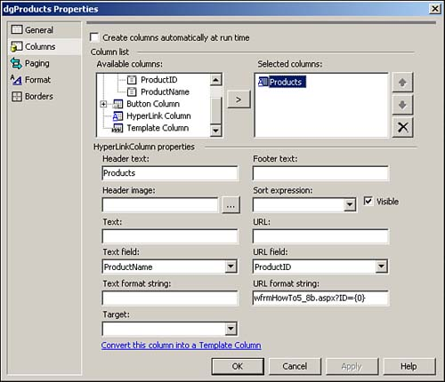
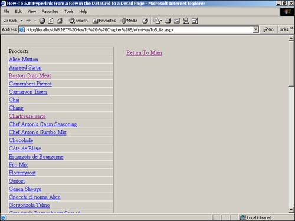
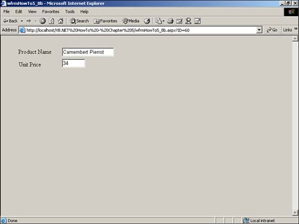

Often, I need to zero in and display data based on a record in the DataGrid control. How do I display detail information in a separate page from a DataGrid control?
One of the types of columns that you can use in the data grid is the HyperLink column. This column makes it fairly easy to link pages based on data. To see how the HyperLink type column is used in this How-To, take a look at Figure 5.14.

By your specifying the URL Field to be ProductID and URL Format String to be wfrmHowTo5_8b.aspx?ID={0}, the data grid automatically calls the wfrmHowTo5_8b.aspx and passes the ProductID to the form when you click on a product.
Open and run the Visual Basic .NET-Chapter 5 solution. From the main page, click on the hyperlink with the caption How-To 5.8: Hyperlink From a Row in the Data Grid to a Detail Page. You then see all the products loaded into a data grid. Notice that the products are actually hyperlinks (see Figure 5.15).

When you click on a product, another page is displayed, with detail information supplied (see Figure 5.16).
Create a Web Form. Then place the controls in Table 5.12 and Figure 5.15 with the following properties set.
|
Object |
Property |
Setting |
|---|---|---|
|
OleDbDataAdapter |
ID |
odaProducts |
|
SelectCommand |
SELECT ProductID, ProductName FROM Products |
|
|
DataSet |
ID |
dsProducts |
|
DataGrid |
ID |
dgProducts |
|
DataSource |
dsProducts |
|
|
DataKeyField |
ProductID |
|
|
DataMember |
Products |
|
|
HyperLink |
ID |
hplReturnToMain |
|
NavigateURL |
wfrmMain.aspx |
Right-click on the DataGrid control and choose Property Builder. Click on the Columns tab and set the properties as displayed in Figure 5.14. Be sure to note the name of the form you are calling in the URL Format String so that you can name it the same in step 4.
Add the code in Listing 5.30 to the Load event of the page.
Private Sub Page_Load(ByVal sender As System.Object,
ByVal e As System.EventArgs) Handles MyBase.Load
'Put user code to initialize the page here
odaProducts.Fill(DsProducts)
dgProducts.DataBind()
End Sub
Create another Web Form. Then place the controls in Table 5.13 and Figure 5.16 with the following properties set.
|
Object |
Property |
Setting |
|---|---|---|
|
Label |
Text |
Product Name |
|
Label |
Text |
Unit Price |
|
TextBox |
ID |
txtProductName |
|
TextBox |
ID |
txtUnitPrice |
Add the code in Listing 5.31 to the Load event of the page. In the SQL select statement created in this listing, the Request.Item is used to grab the productID that was passed from the first form. The dtProdIndiv data table is filled, and the individual column information is loaded into the text boxes.
Private Sub Page_Load(ByVal sender As System.Object,
ByVal e As System.EventArgs) Handles MyBase.Load
'Put user code to initialize the page here
Dim odaProdIndiv As OleDb.OleDbDataAdapter
odaProdIndiv = New _
OleDb.OleDbDataAdapter(_
"Select * From Products Where ProductID = " &
Request.Item("ID"), BuildCnnStr("(local)", "Northwind"))
Dim dtProdIndiv As New DataTable()
odaProdIndiv.Fill(dtProdIndiv)
With dtProdIndiv.Rows(0)
Me.txtProductName.Text = .Item("ProductName")
Me.txtUnitPrice.Text = .Item("UnitPrice")
End With
End Sub

That's it! A good way to expand this example is to add the coding technique learned in the previous How-To for editing data.
Using data with your Web Forms is not much harder than using Windows Forms. Just remember to stash some variables for round trips to the server and to bind your data.